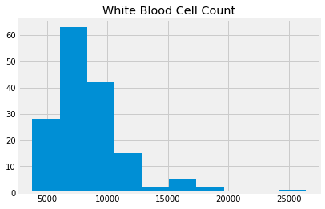
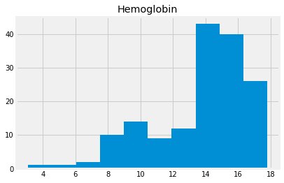
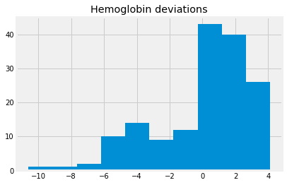
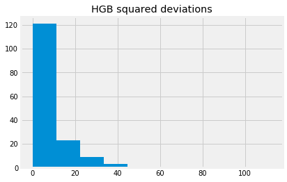
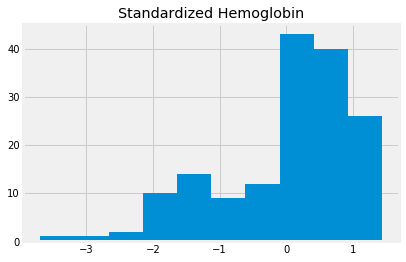
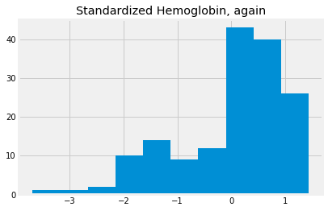
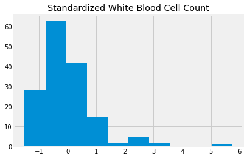

9.1 Standard scores
Describing distributions
We have seen several examples of distributions.
We can describe distributions as having a center, and a spread.
In the mean as predictor, we saw that the mean is a useful measure of the center of a distribution.
What measure should we use for the spread?
Chronic kidney disease
We’re going to work with a data set that was collected to help doctors diagnose chronic kidney disease (CKD). Each row in the data set represents a single patient who was treated in the past and whose diagnosis is known. For each patient, we have a bunch of measurements from a blood test.
You will see more of this dataset soon.
If you are running on your laptop, you should download the ckd.csv file to the same directory as this notebook.
ckd_full = pd.read_csv('ckd.csv')
ckd_full.head()
| Age | Blood Pressure | Specific Gravity | Albumin | Sugar | Red Blood Cells | Pus Cell | Pus Cell clumps | Bacteria | Blood Glucose Random | ... | Packed Cell Volume | White Blood Cell Count | Red Blood Cell Count | Hypertension | Diabetes Mellitus | Coronary Artery Disease | Appetite | Pedal Edema | Anemia | Class | |
|---|---|---|---|---|---|---|---|---|---|---|---|---|---|---|---|---|---|---|---|---|---|
| 0 | 48 | 70 | 1.005 | 4 | 0 | normal | abnormal | present | notpresent | 117 | ... | 32 | 6700 | 3.9 | yes | no | no | poor | yes | yes | 1 |
| 1 | 53 | 90 | 1.020 | 2 | 0 | abnormal | abnormal | present | notpresent | 70 | ... | 29 | 12100 | 3.7 | yes | yes | no | poor | no | yes | 1 |
| 2 | 63 | 70 | 1.010 | 3 | 0 | abnormal | abnormal | present | notpresent | 380 | ... | 32 | 4500 | 3.8 | yes | yes | no | poor | yes | no | 1 |
| 3 | 68 | 80 | 1.010 | 3 | 2 | normal | abnormal | present | present | 157 | ... | 16 | 11000 | 2.6 | yes | yes | yes | poor | yes | no | 1 |
| 4 | 61 | 80 | 1.015 | 2 | 0 | abnormal | abnormal | notpresent | notpresent | 173 | ... | 24 | 9200 | 3.2 | yes | yes | yes | poor | yes | yes | 1 |
5 rows × 25 columns
We will use this dataset to get a couple of variables (columns) and therefore a couple of distributions.
Let’s start with the White Blood Cell Count, usually abbreviated as WBC.
wbc = ckd_full['White Blood Cell Count']
wbc.hist()
plt.title('White Blood Cell Count');

wbc.describe()
count 158.000000
mean 8475.949367
std 3126.880181
min 3800.000000
25% 6525.000000
50% 7800.000000
75% 9775.000000
max 26400.000000
Name: White Blood Cell Count, dtype: float64
Compare this to Hemoglobin concentrations:
hgb = ckd_full['Hemoglobin']
hgb.hist()
plt.title('Hemoglobin');

hgb.describe()
count 158.000000
mean 13.687342
std 2.882204
min 3.100000
25% 12.600000
50% 14.250000
75% 15.775000
max 17.800000
Name: Hemoglobin, dtype: float64
Notice that we can’t easily plot these two on the same axes, because their units are so different.
We could try and fix this by subtracting the mean, as a center value, so the values are now deviations from the mean.
wbc_deviations = wbc - np.mean(wbc)
wbc_deviations.hist()
plt.title('White Blood Cell Count deviations');

hgb_deviations = hgb - np.mean(hgb)
hgb_deviations.hist()
plt.title('Hemoglobin deviations');

The deviations each have a mean very very close to zero, and therefore, they have the same center:
np.mean(wbc_deviations), np.mean(hgb_deviations)
(-1.8420145858692217e-13, 7.195369476051647e-16)
We still cannot plot them on the same axes, because the WBC values have a very different spread. They will completely dominate the x axis of the graph. We can’t reasonably compare the WBC deviations to the Hemoglobin deviations, because they have such different units.
We would like a measure of the spread of the distribution, so we can set the two distributions to have the same spread.
The standard deviation
In the mean as predictor section, we found that mean was the best value to use as a predictor, to minimize the sum of squared deviations.
Maybe we could get an idea of the typical squared deviation, as a measure of spread?
hgb_deviations[:10]
0 -2.487342
1 -4.187342
2 -2.887342
3 -8.087342
4 -5.987342
5 -3.887342
6 -1.187342
7 -3.687342
8 -3.187342
9 -3.887342
Name: Hemoglobin, dtype: float64
hgb_dev_sq = hgb_deviations ** 2
hgb_dev_sq[:10]
0 6.186869
1 17.533831
2 8.336743
3 65.405097
4 35.848261
5 15.111426
6 1.409780
7 13.596489
8 10.159148
9 15.111426
Name: Hemoglobin, dtype: float64
hgb_dev_sq.hist()
plt.title('HGB squared deviations')
Text(0.5, 1.0, 'HGB squared deviations')

The center, or typical value, of this distribution, could be the mean.
hgb_dev_sq_mean = np.mean(hgb_dev_sq)
hgb_dev_sq_mean
8.254523313571543
This is the mean squared deviation. This is also called the variance. Numpy has a function to calculate that in one shot:
# The mean squared deviation is the variance
np.var(hgb)
8.254523313571543
The mean squared deviation is a good indicator of the typical squared deviation. What should we used for some measure of the typical devation?
We could take the square root of the mean squared deviation, like this:
np.sqrt(hgb_dev_sq_mean)
2.873068623192203
This is a measure of the spread of the distribution. It is a measure of the typical or average deviation.
It is also called the standard deviation.
np.std(hgb)
2.873068623192203
We can make our distribution have a standard center and a standard spread by dividing our mean-centered distribution, by the standard deviation. Then the distribution will have a standard deviation very close to 1.
This version of the distribution, with mean 0 and standard deviation of 1, is called the standardized distribution.
standardized_hgb = hgb_deviations / np.std(hgb)
standardized_hgb.hist()
plt.title('Standardized Hemoglobin')
Text(0.5, 1.0, 'Standardized Hemoglobin')

We can make a function to do this:
def standard_units(x):
return (x - np.mean(x))/np.std(x)
std_hgb_again = standard_units(hgb)
std_hgb_again.hist()
plt.title('Standardized Hemoglobin, again')
Text(0.5, 1.0, 'Standardized Hemoglobin, again')

If we do the same to the WBC, we can compare values of the distributions:
std_wbc = standard_units(wbc)
std_wbc.hist()
plt.title('Standardized White Blood Cell Count')
Text(0.5, 1.0, 'Standardized White Blood Cell Count')

Every value in standardized units gives the deviation of the original value from its mean, in terms of the number of standard deviations.